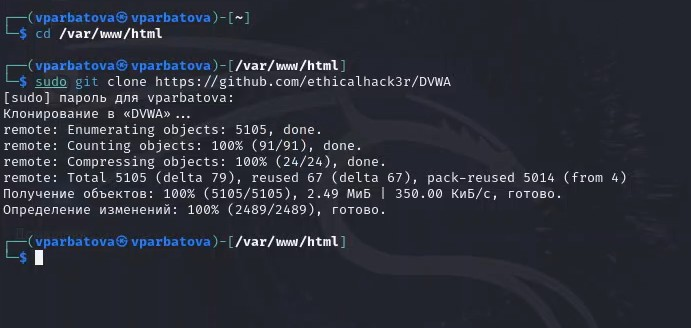
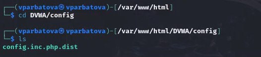
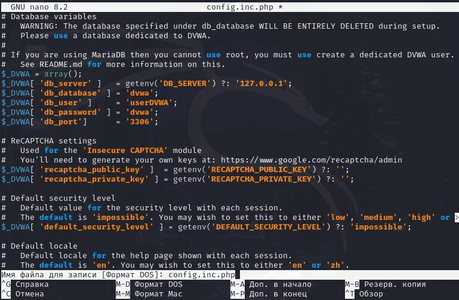
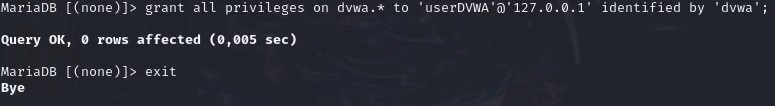
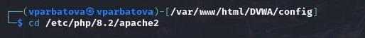
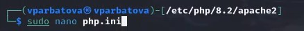
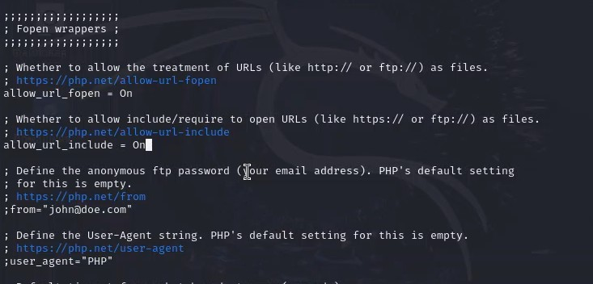
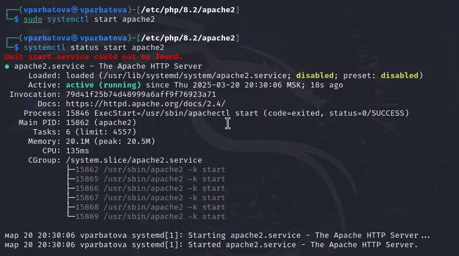

Презентация по второму этапу индивидуального проекта
Информационная безопасность
Арабтова В. П.
22 марта 2025
Цель работы
Установить DVWA в гостевую систему к Kali Linux.
Задание
Установите DVWA в гостевую систему к Kali Linux.
Теоретическое введение
Некоторые из уязвимостей веб приложений, который содержит DVWA:
Брутфорс: Брутфорс HTTP формы страницы входа - используется для тестирования инструментов по атаке на пароль методом грубой силы и показывает небезопасность слабых паролей.
Исполнение (внедрение) команд: Выполнение команд уровня операционной системы.
Межсайтовая подделка запроса (CSRF): Позволяет «атакующему» изменить пароль администратора приложений.
Внедрение (инклуд) файлов: Позволяет «атакующему» присоединить удалённые/локальные файлы в веб приложение.
SQL внедрение: Позволяет «атакующему» внедрить SQL выражения в HTTP из поля ввода, DVWA включает слепое и основанное на ошибке SQL внедрение.
Небезопасная выгрузка файлов: Позволяет «атакующему» выгрузить вредоносные файлы на веб сервер.
Межсайтовый скриптинг (XSS): «Атакующий» может внедрить свои скрипты в веб приложение/базу данных. DVWA включает отражённую и хранимую XSS.
Пасхальные яйца: раскрытие полных путей, обход аутентификации и некоторые другие.
DVWA имеет три уровня безопасности, они меняют уровень безопасности каждого веб приложения в DVWA:
Невозможный — этот уровень должен быть безопасным от всех уязвимостей. Он используется для сравнения уязвимого исходного кода с безопасным исходным кодом.
Высокий — это расширение среднего уровня сложности, со смесью более сложных или альтернативных плохих практик в попытке обезопасить код. Уязвимости не позволяют такой простор эксплуатации как на других уровнях.
Средний — этот уровень безопасности предназначен главным образом для того, чтобы дать пользователю пример плохих практик безопасности, где разработчик попытался сделать приложение безопасным, но потерпел неудачу.
Низкий — этот уровень безопасности совершенно уязвим и совсем не имеет защиты. Его предназначение быть примером среди уязвимых веб приложений, примером плохих практик программирования и служить платформой обучения базовым техникам эксплуатации.
Выполнение лабораторной работы
Настройка DVWA происходит на нашем локальном хосте, поэтому нужно перейти в директорию /var/www/html. Затем клонирую нужный репозиторий GitHub, указанный в задании к этоому этапу индивидуального проекта
Клонирование репозитория
Проверяю, что всё правильно скопировалось и добавляю права на этот файл, чтобы у меня был полный доступ к нему
Добавляю права
Перехожу в папку и смотрю, какие в ней файлы
Перехожу в папку
Копирую файл и проверяю, как он скопировался. Делаю это для того, чтобы в случае, если что-то пойдет не так, у меня был запасной вариант
Копирование файла
Открываю файл в текстовом редакторе
Открываю файл в редакторе
Меняю информацию об имени пользователя и пароле
Меняю имя пользователя и пароль
Запускаю mysql, он изначально установлен в Kali Linux, поэтому скачивать не надо и проверяю, запустился ли
Запуск mysql
Авторизуюсь в базе данных от имени пользователя root. Появляется командная строка с приглашением “MariaDB”, далее создаем в ней нового пользователя, используя учетные данные из файла config.inc.php
Авторизация
Выдаю пользователю все привилегии и выхожу
Выдаю привилегии
Теперь надо настроить сервер apache2, для этого перехожу в соответствующую директорию
Переход в директорию
Открываю файл в текстовом редакторе
Открытие файла
Нахожу параметры allow_url_fopen и allow_url_include. Эти параметры должны быть on
Редактирование файла
Запускаю apache2 и проверяю статус, чтобы убедиться, что он действительно запущен
Запуск
В браузере вбиваю 127.0.0.1/DVWA и попадаю на сайт, где нужно авторизироваться